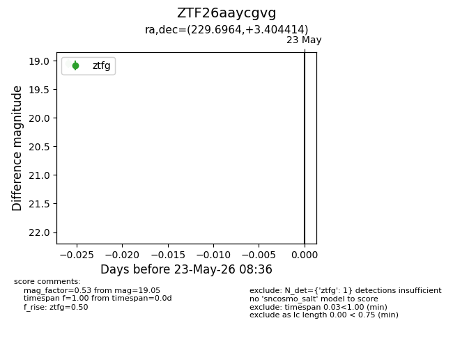
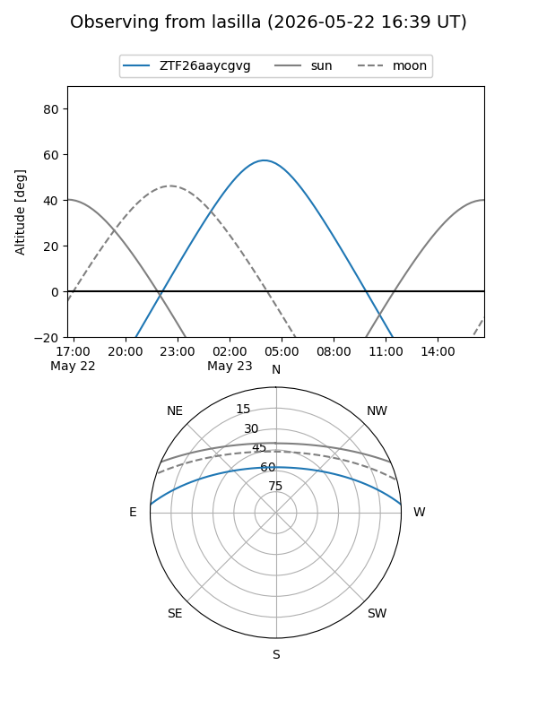
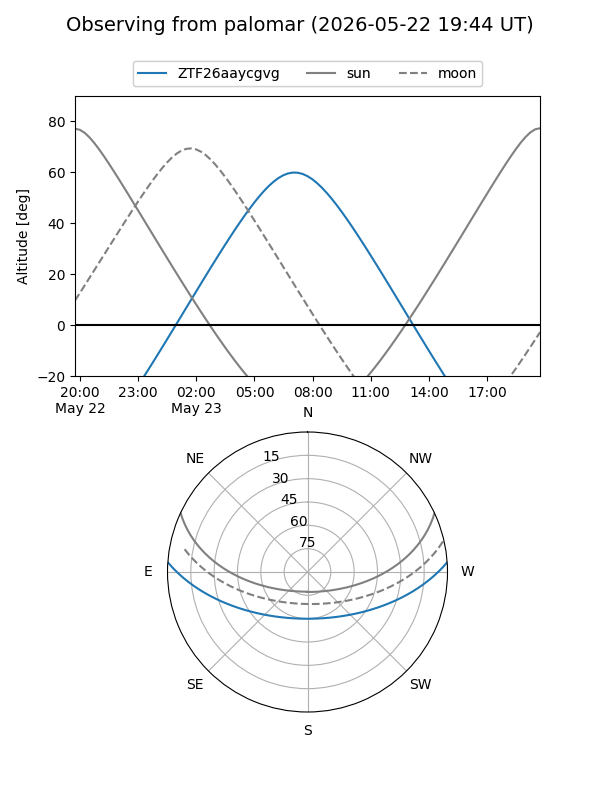

ZTF26aaycgvg
Target ZTF26aaycgvg at 2026-05-23 08:37
Aliases and brokers:
lsst-FINK: link
lsst-Lasair: link
lsst-ALeRCE: link
ztf-FINK: link
ztf-Lasair: link
ztf-ALeRCE: link
alt names
ZTF26aaycgvg (ztf,fink_ztf)
Coordinates:
equatorial (ra, dec) = 229.6964,+3.40441
equatorial (HMS+DMS) = 15:18:47.13,+03:24:15.89
galactic (l, b) = (5.4394,+47.57139)
Flags:
Photometry:
last ztfg=19.05
1 ztfg detections
Lightcurve

Visibility


Additional plots